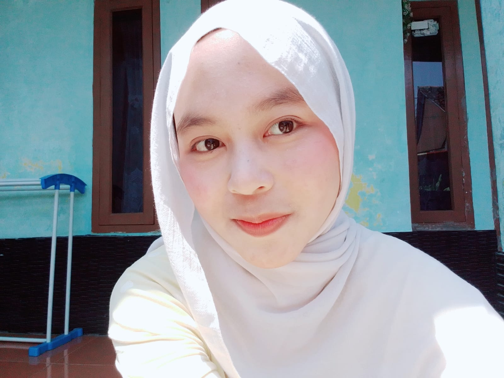

Hallo Perkenalkan!

Biodata
| Nama | Silvi Anggraeni |
|---|---|
| NIM | 1247050035 |
| Program Studi | Informatika |
| Semester | 5 |
| Fakultas | Sains dan Teknologi |
| Universitas | UIN Sunan Gunung Djati Bandung |
Tentang Saya
Saya adalah mahasiswa Program Studi Informatika di Fakultas Sains dan Teknologi, UIN Sunan Gunung Djati Bandung. Saat ini sedang menempuh perkuliahan sambil mengembangkan kemampuan di bidang pengembangan aplikasi web.
Jadwal Mata Kuliah Semester 5
Tahun Akademik : 2026/2027 (Ganjil)
| No | Mata Kuliah | SKS | Jadwal | Dosen Pengampu |
|---|---|---|---|---|
| 1 | Manajemen Basis Data | 3 | Senin 12:40 - 15:10 | Wildan Budiawan Zulfikar, S.T., M.Kom. |
| 2 | Jaringan Komputer | 3 | Rabu 07:00 - 09:30 | Cecep Nurul Alam, M.T. |
| 3 | Pengembangan Aplikasi Mobile | 3 | Selasa 15:30 - 18:00 | H. Aldy Rialdy Atmadja, M.T. |
| 4 | Pengembangan Aplikasi Web | 3 | Jumat 07:00 - 09:30 | Muhammad Deden Firdaus, ST, M.Kom |
| 5 | Interaksi Manusia dan Komputer | 3 | Kamis 07:00 - 09:30 | Dr. Cepy Slamet S.T., M.Kom. |
| 6 | Intelegensia Buatan | 3 | Jumat 12:40 - 15:10 | Jumadi ST., M.Cs. |
| 7 | Manajemen Proyek | 3 | Senin 15:30 - 18:00 | Agung Wahana S.E., M.T. |
| 8 | Kewirausahaan & Etika | 2 | Selasa 10:20 - 12:00 | Adam Faroqi ST., MT. |
| Jumlah SKS | 23 |
Kontak & Tautan
Anda dapat menghubungi saya atau melihat profil kampus saya lebih lanjut melalui tautan berikut: